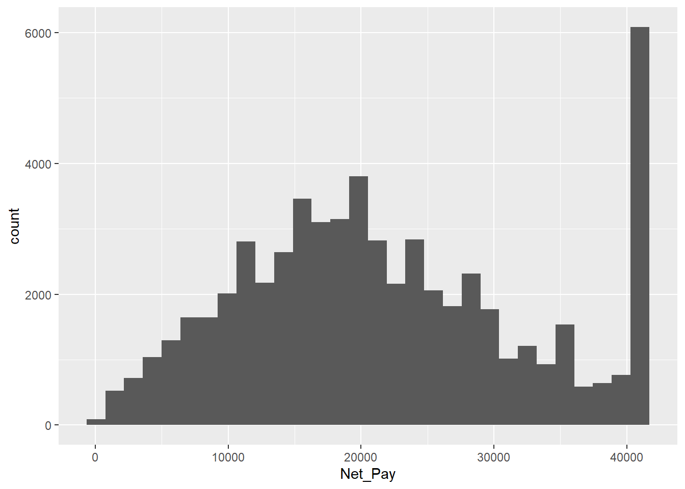
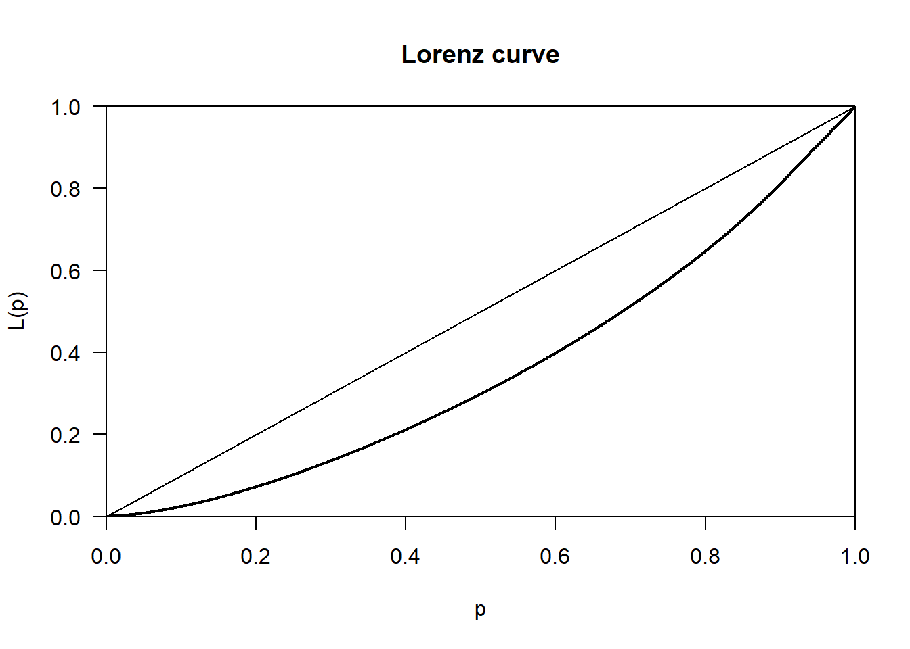
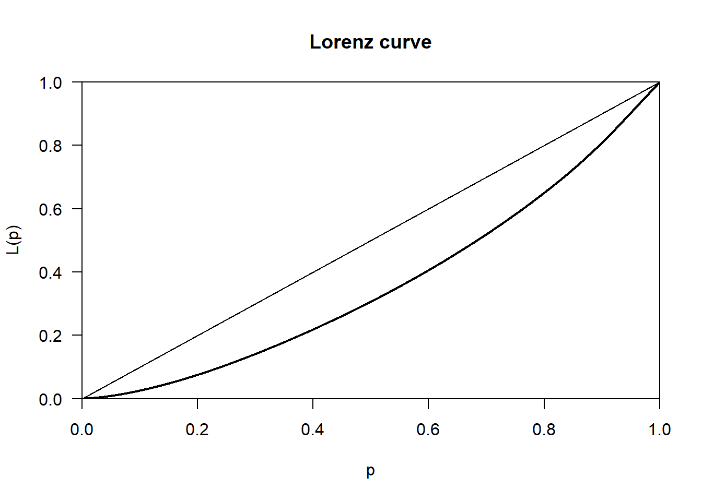
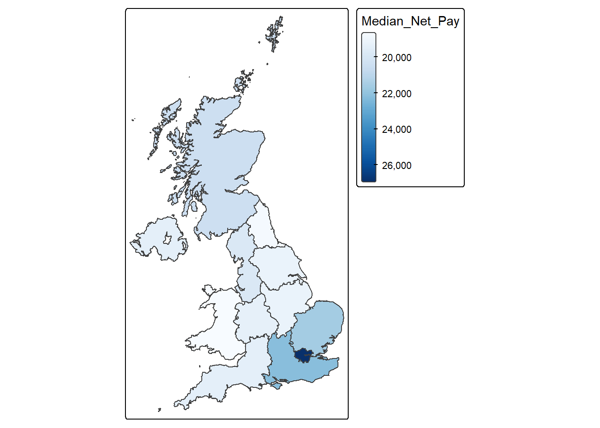
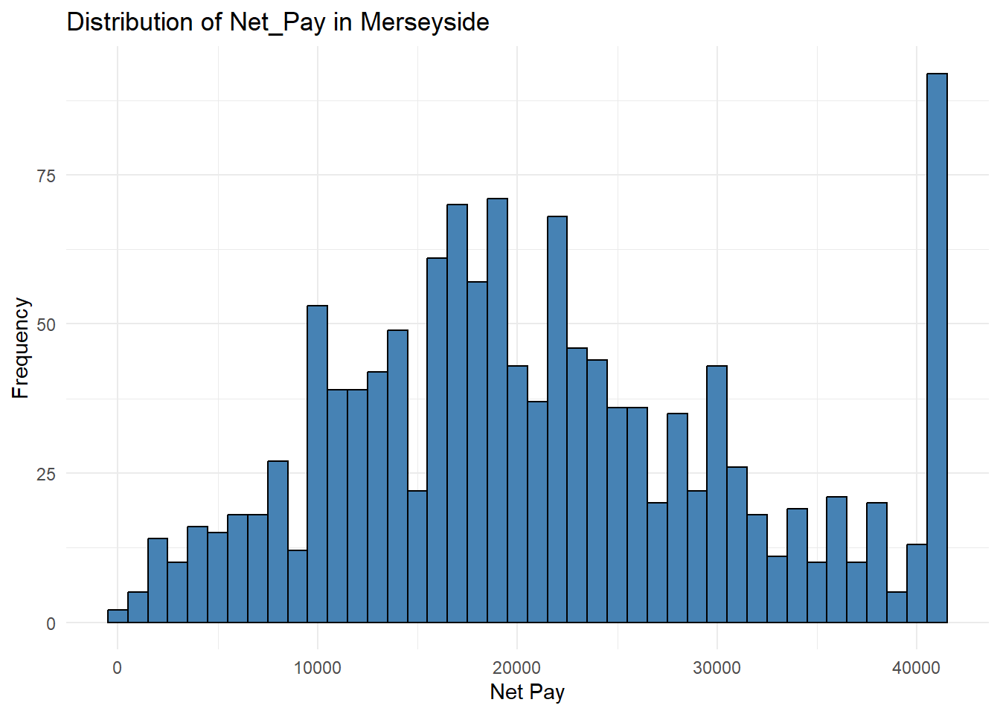

rm( list = ls( ) )5 Lab: Can we trust our results?
5.1 Overview
This week focuses on wealth, which strongly affects people’s life chances. Wealth can influence life expectancy, education, job opportunities, and mental health. In Britain, social mobility is low, meaning a person’s future is closely linked to their family background, education, and where they live. Reducing inequality and improving access to education and opportunities benefits both individuals and the wider economy.
The practical will explore the following questions:
- What does it mean to be ‘rich’?
- Who is rich?
- How reliable are the results?
To answer these questions, data from the Annual Population Survey (2021) will be analysed. The practical also introduces the basic steps used in quantitative research:
- Understanding the dataset
- Identifying key outcome and explanatory variables
- Exploring relationships between variables (correlation)
- Understanding confidence in the relationship between variables
These skills are essential for future research projects, including fieldwork and dissertations that use quantitative data.
5.2 Prepare your working environment
For this Week 5 session, create a sub-folder called Week5 in your ENVS162 folder on your M-Drive. This is exactly the step we did in Weeks 1, 2, 3, and 4.
Download this week’s practical datasets from Canvas Week 5:
- APS_2021.csv
- UK_regions_map.geojson
Check whether there are any previous left dataframes in your RStudio in the upper-right side Environment pane. You can always use the to clear all the dataframes in your environment and make it all clean. For the same aim, you can click the icon
 , or you can run the below code:
, or you can run the below code:
This command and also the brush icon can both clear RStudio’s memory, removing any data objects that you have previously created.
5.3 Load libraries
Exactly as what we have done for the previous weeks, before starting any analysis in R, we first need to load the essential libraries as all the functions/commands are packed in these libraries. For this week, we will still rely on tidyverse, tmap and sf.
library(tidyverse)
library(sf)
library(tmap)
library(dplyr)
library ("ineq")5.4 Open the APS dataset
This will open the APS_2021 data file
APS <- read.csv("APS_2021.csv",stringsAsFactors = TRUE)This will result in the APS dataset being added to your Environment pane in RStudio as APS. This dataset contains data on all adult respondents (persons aged 16+) to the 2021 Annual Population Survey.
5.5 Dataset familiarisation
Use nrow( ), ncol( ), names( ) and View( ) commands to give yourself an insight into the contents of the Annual Population Survey.
nrow(APS)[1] 209651ncol( APS)[1] 59names( APS) [1] "idref" "Household_ID" "Extended_Family_ID"
[4] "Family_ID" "Hhold_Head" "Family_Head"
[7] "Age" "Sex" "Marital_Status"
[10] "Hhold_Type" "Family_Type" "Age_Group"
[13] "Address_Duration" "Arrival_Year" "Benefit_Carers"
[16] "Benefit_Child" "Benefit_Health" "Benefit_Housing"
[19] "Benefit_Income" "Benefit_JSA" "Benefit_Pension"
[22] "Benefit_Tax" "Benefit_UC" "Birth_Country"
[25] "Commute_Method" "Commute_Time" "Disabled"
[28] "Educ_Age" "Equiv_Net_Pay" "Ethnicity"
[31] "Family_Size" "Family_Toddlers" "Furnishings"
[34] "Gross_Pay" "Health" "Hholds_at_Address"
[37] "Hhold_Size" "Highest_Qual" "Industry"
[40] "Job_Years" "Merseyside" "Nationality"
[43] "Net_Pay" "NS_SEC" "Private_Sector"
[46] "Region" "Religion" "SOC_Major"
[49] "SOC_Sub_Major" "SOC_Minor" "Tenure"
[52] "Under_employed" "Unemp_Duration" "Work_Home"
[55] "Work_Hours" "Work_Status" "Work_Temporary"
[58] "Youngest_Child" "Weight_APS" View(APS )To supplement these insights, make sure you also read through the information below.
Key points to note are that:
- Each row is a person
- Instead of a nested geography (e.g. which county and region a district is in) there is a nested household hierarchy (which household, extended family and family a person is living in).
The variables contained in the APS cover the following broad topics:
- Household, Family and Person identifiers: idref, Household_ID, Extended_Family_ID, Family_ID, Hhold_Head, Family_Head
- Geographic information: Region, District, Merseyside (yes/no)
- Basic demographic information: Age, Age_Group, Sex, Marital_Status
- Cultural attributes: Ethnicity, Nationality, Religion, Educ_Age, Highest_Qual
- Health: Disabled, Health
- Migration: Address_Duration, Arrival_Year, Birth_Country
- Household attributes: Family_Size, Family_Toddlers, Family_Type (type of partnership and children), Furnishings, Hholds_at_Address, Hhold_Size (Persons), Hhold_Type (number of families; number and type of children), Tenure, Youngest_Child
- Work-related information: Commute_Method, Commute_Time, Industry, Job_Years, NS_SEC, Private_Sector, SOC_Major, SOC_Sub_Major, SOC_Minor, Under_employed, Unemp_Duration, Work_Home, Work_Hours, Work_Status, Work_Temporary
- Welfare benefits received: Benefit_Carers to Benefit_UC (Universal Credit)
- Income: Equiv_Net_Pay, Gross_Pay, Net_Pay
Many of the variables in the APS dataset are similar to variables we have met in previous datasets. Of the ones we haven’t met before, many are reasonably self-explanatory (e.g. Hhold_Size, Address_Duration etc.). Others are a little more obscure, most notable ‘Hhold_Type’, ‘Family_Type’, ‘NS_SEC’ and ‘SOC_Major’.
Hhold_Type and Family_Type record the composition of the people in each household and family captured in the APS. (A household may contain more than one family.)
Let’s see the type of information that Hhold_Type contains.
APS %>%
count(Hhold_Type) Hhold_Type n
1 1 family, dep and nondep children 10748
2 1 family, dep children 42791
3 1 family, no children 108471
4 1 family, nondep children 31321
5 2+ families, dep and nondep children 1274
6 2+ families, dep children 4159
7 2+ families, no children 8516
8 2+ families, nondep children 2371We can also sort the results using the following functions as previously discussed in lab 2:
arrange(n)→ sorts in ascending order (smallest to largest)arrange(desc(n))→ sorts in descending order
Let’s show the results in descending order
APS %>%
count(Hhold_Type) %>%
arrange(desc(n)) Hhold_Type n
1 1 family, no children 108471
2 1 family, dep children 42791
3 1 family, nondep children 31321
4 1 family, dep and nondep children 10748
5 2+ families, no children 8516
6 2+ families, dep children 4159
7 2+ families, nondep children 2371
8 2+ families, dep and nondep children 1274QUESTION 1
Based on the above output, which is the most frequent household type?
Solution
1 family, no children with 108,471 households.
QUESTION 2
Write code below to determine the largest household size in the data. HINT: this information can be found in the Hhold_Size variable
Solution
APS %>%
count(Hhold_Size) %>%
arrange(desc(n)) Hhold_Size n
1 2 86065
2 3 38331
3 4 34655
4 1 34237
5 5 11083
6 6 3630
7 7 1034
8 8 384
9 9 140
10 10 46
11 11 25
12 12 21Household with 2 persons account for 86,065 households in the data.
5.6 Understanding the outcome
Having familiarised ourselves with our dataset, the next steps in any data analysis are to identify and explore the ‘outcome’ variable(s) of interest.
5.6.1 Identifying the outcome(s) of interest
The purpose of this practical is to explore the geography of wealth.
Ideally we would do this using a variable which captured the full extent of each respondent’s wealth, which rests upon not only their total income (from earned income, state welfare payments, plus interest earned on savings etc.), but also their total financial assets (i.e. total value of all possessions and financial assets owned, ranging from homes and cars to stocks and shares).
However, the Annual Population Survey does not capture all of this information, restricting itself to a focus on income, rather than on financial assets. In addition, to protect respondent confidentiality the version of the APS available for classroom use records only earned income. Receipt of various state welfare payments is flagged (e.g. Benefit_Carers, Benefit_Child etc), but without reporting the amount received.
This means that our ‘geography of wealth’ will of necessity become a ‘geography of pay’.
In the APS there are three variables which capture aspects of pay.
- Gross_Pay, which records Gross annual pay from a person’s main employer (£)
- Net_Pay, which records annual pay from a person’s main employer (£) after deduction of all taxes
- Equiv_Net_Pay, which records the mean Net Pay of all members in a household
These three variables will form the focus of our study of the ‘geography of wealth’. However, an alternative approach would be to use the Tenure variable, which flags whether or not someone owns their own home; or to use one or more of the Benefit_X variables that flag which survey respondents are sufficiently poor that they qualify for state welfare support of one kind or another.
To gain familiarity with a chosen outcome variable we need to understand its distribution, graphically (Section 5.2) and statistically (Section 5.3).
5.6.2 Visualise the distribution
The variable Net_Pay does not place people into income bands. Instead it is a precise measure of income received. Hence Net_Pay is a continuous variable.
As seen in previous weeks, to visualise the distribution of a continuous variable we need to use a histogram:
APS %>%
ggplot( ) +
geom_histogram( aes( x = Net_Pay ), bins = 30 )Warning: Removed 150997 rows containing non-finite outside the scale range
(`stat_bin()`).
The warning message received means that ggplot dropped 150,997 rows because the Net_Pay variable used for the bins had values that were NA. NA values mean “Not Available”. They represent missing data. We can check the number of NA values using the following code.
sum(is.na(APS$Net_Pay))[1] 150997As can be seen, this is the same number reported in the warning message before. While handling NA values is important, they are not the focus of this lab and therefore will be ignored.
Getting back to the histogram…
A point to notice from a histogram of the distribution of Net_Pay is the ‘spike’ in observations at the top of the distribution, which seems to suggest that lots of people have an annual net pay in the mid £40k range.
The reason for this apparent spike is that in the classroom version of the APS the Office for National Statistics have ‘top-coded’ the recorded values of Net (and Gross) pay in order to protect respondent confidentiality. In other words all values about a certain threshold have been capped at a maximum value.
For Net_Pay this maximum value is:
max( APS$Net_Pay, na.rm = TRUE )[1] 40976NOTE: If there were no NA values in the variables there would be no need to include na.rm = TRUE in the code.
As a result, if someone in the APS has a Net_Pay of 40,976, this does NOT mean that they earn £40,976 a year. Instead, it means that they ear £40,976 OR MORE per year (i.e. £40,976+). This equate to a salary of £788+ per week, or £3415 per month.
Rerun the above code without removing the NA values
max( APS$Net_Pay)[1] NAQUESTION 3
The above code will give the incorrect results if we do not remove the NA values, ensuring that NA values are removed. Find the mean value for Net_Pay and be sure to remove NA values. Write code to show this.
mean( APS$Net_Pay, na.rm = TRUE)[1] 21759.955.7 Income inequality
Income is the United Kingdom is clearly not shared equally between all of its citizens. Some earn far more than others, even after taking into account the fact that higher earners pay more tax.
Whilst there are many countries in the world with higher levels of income inequality, by European standards income equality in the UK is unusually high:
“All other European Union countries enjoy greater income equality [than the UK]. Because of this their citizens are freer to live where they wish, to mix equally, to go to school with each other rather than segregate their children [into private fee-paying schools], as the majority of parents in the top 10 per cent of income distribution in Britain feel compelled to do.” Danny Dorling (2018) Peak Inequality New Statesman, 4th July.
We can visualise this inequality using a Lorenz Curve.
plot( Lc( APS$Net_Pay ) )
In the graph above the horizontal axis measures the cumulative percentage of APS respondents, whilst the vertical axis measures the cumulative % of all Net Pay. The straight diagonal line is known as the ‘Line of equality’. This is what the distribution of income (Net_Pay) in the UK would look like if it was equally shared across all APS respondents. The thicker black line below this, known as the Lorenz Curve, reflects the way income is actually shared. For example, reading off the Lorenz Curve, 40% of APS respondents (represented by 0.4 on the x-axis) have access to only 20% of the total income available (the value on the on the y-axis). In contrast, if the the income were equally shared, then 40% of the population would have access to 40% of the income (reading off the line of equality).
The larger the area between the line of equality and the Lorenz Curve, the less equally shared the income is. And the size of this area can be summarised in one number by the Gini coefficient, which takes a value between 0 (maximum equality) and 1 (p maximum inequality).
Gini( APS$Net_Pay, na.rm = TRUE )[1] 0.279784Note that this Gini coefficient under-states the true level of inequality in the UK, because the incomes of the top 9.87% of earners have been top-coded with a value of £40,976 per annum. This makes it look like the top-earners collectively have a smaller share of total pay than they actually do. It also makes it look like all persons at the top end of the income distribution earn the same amount, which is also not true.
Because the APS only covers the UK, we can’t directly compare the income inequality observed in the UK with the income inequality observed in other European countries. However, we can use the APS to explore the extent to which income inequality varies, if at all, between the constituent regions of the UK. Here is an example for the “North West’
APS %>%
filter(Region == "North West", !is.na(Net_Pay)) %>%
pull(Net_Pay) %>%
Lc() %>%
plot()
APS %>%
filter(Region == "North West", !is.na(Net_Pay)) %>%
pull(Net_Pay) %>%
Gini()[1] 0.2726889Let’s find out when it’s 0.5 on the x-axis whats the y value.
APS %>%
filter(Region == "North West", !is.na(Net_Pay)) %>%
pull(Net_Pay) %>%
Lc() %>%
(\(lc) approx(lc$p, lc$L, xout = 0.5)$y)()[1] 0.3065287QUESTION 4
The computed gini values for all respondents in all regions is 0.28 whereas for the Northwest region it is 0.27. Interpret these results.
Solution
Solution:
The North West’s Gini coefficient (0.27) is slightly lower than the overall value (0.28). This means income in the North West is distributed slightly more evenly than across the UK as a whole. In practical terms, there is marginally less disparity between lower-income and higher-income individuals in the North West compared with the national picture.
Let’s now compare the gini value for each regions.
gini_by_region <- APS %>%
filter(!is.na(Net_Pay)) %>%
group_by(Region) %>%
summarise(
n = n(),
Gini = Gini(Net_Pay),
.groups = "drop"
) %>%
arrange(desc(Gini))
print(gini_by_region)# A tibble: 12 × 3
Region n Gini
<fct> <int> <dbl>
1 South West 5606 0.286
2 South East 7587 0.284
3 Eastern 4298 0.281
4 West Midlands 4181 0.280
5 East Midlands 3328 0.278
6 Yorkshire & Humberside 4853 0.278
7 Wales 5692 0.275
8 North East 4118 0.274
9 North West 6446 0.273
10 Scotland 5837 0.270
11 Northern Ireland 2432 0.267
12 London 4276 0.245The results show that each region has inequalities in Net_Pay but they are on the moderate side. Interestingly, the values are very similar with no evidence of extreme disparities.
5.8 How much does it take to be ‘Rich’?
Having familiarised ourselves with the outcome variables available we can now answer our first research question: How much does it take to be rich? Or, more specifically, how much does a paid employee have earn per annum to be regarded ‘rich’ relative to other paid employees?
There is no one answer to this question, which is in many ways very subjective:
“Some people would define rich as having more money than you”need” to live, but definition of “needs” vary dramatically.”…“In his book Richistan, Wall Street Journal reporter Robert Frank concluded that ‘people’s definition of rich is subjective and is usually twice their current net worth’”. (BBC (2011) The rich: what exactly does the terminology mean?, BBC News website, 24th November.
However, one common trope when writing about the rich is to refer to the ‘top 1%’:
“[In the United States], 1% of the people take nearly a quarter of the nation’s income … In terms of wealth rather than income, the top 1% control 40% … [as a result] the top 1% have the best houses, the best educations, the best doctors, and the best lifestyles, but there is one thing that money doesn’t seem to have bought: an understanding that their fate is bound up with how the other 99% live. Throughout history, this is something that the top 1% eventually do learn. Too late.” Joseph Stiglitz (2011) Of the 1%, by the 1%, for the 1%, Vanity Fair, May 2011.
Unfortunately, one knock on consequence of the top-coding used for the pay variables in the APS means that we can’t identify how much money you have to earn to fall into the top 1% of the income distribution. This means that we will necessary have to adopt a lower threshold definition of what it means to be ‘rich’. We can use is ‘in the top 10% of the income distribution’.
5.8.1 Top 10% of Net Pay
This can be operationalised as follows:
- Find the income of person at 90th percentile of the income distribution using the
quantile()function, and asking for the value of the 90th percentile using theprob = 0.9option:
APS %>%
select( Net_Pay ) %>%
quantile( prob = 0.9, na.rm = TRUE ) 90%
40820 max(APS$Net_Pay, na.rm = TRUE)[1] 40976This tells us that 90% of APS respondents have net pay of £40,820 or less. The remaining 10% therefore have net incomes of £40,821 or higher (with the highest person(s) having a net salary of £40,976).
QUESTION 5
Write code to determine what the minimum person being paid? What could be responsible for this value.
min(APS$Net_Pay, na.rm = TRUE)[1] 52This could be people working very few hours such as students or be due to temporary or irregular employment.
5.9 The Geography of Pay
Being geographers, one key task in the familiarisation process remains, which is to check whether or not there is a geography to our outcome. The approach we need to adopt depends on whether we want to explore the geography of the continuous or categorical version of our outcome variable.
5.9.1 Spatially aggregating a continuous variable
Before we can map geographical variations in pay, we first need to:
- identify what geography, if any, exists in the APS
- read in a suitable set of digital boundaries for this geography
- create an area-level dataset containing a summary measure of Net_Pay for each area
- join the resulting area-level dataset to the set of digital boundaries
The first task is relatively straightforward. There are only two geographic identifiers available in the APS: Region and Merseyside. Since the Merseyside variable simply distinguishes between those who do and do not live in Merseyside, a better exploration of the geography of Net_Pay will be provided using Region,which divides the UK into 12 distinct regions.
The second task is also relatively straightforward. Simply download the file UK Regions.geojson from the Week 5 folder on CANVAS, save it to the same folder as your Week 5 folder, then read it in using the read_sf( ) command, saving the boundaries that are read in to a dataset called UK_regions_map:
UK_regions_map <- read_sf( "UK Regions.geojson" )calculate the median value for each region simply involves adding the .by = Region option:
region_medians <-
APS %>%
summarise( Median_Net_Pay = median( Net_Pay, na.rm = TRUE ),
.by = Region )
region_medians Region Median_Net_Pay
1 South West 19422
2 South East 22204
3 London 26988
4 Eastern 21580
5 West Midlands 19344
6 East Midlands 19188
7 North West 19812
8 Yorkshire & Humberside 19188
9 North East 18720
10 Northern Ireland 19448
11 Wales 18616
12 Scotland 20384We can then join the UK_regions_map and region_medians datasets together and then show the results on a map.
Perform the join between both datasets
join_map <- left_join(UK_regions_map, region_medians, by = "Region")Show results on a map.
Regions_medians_map <-
tm_shape(join_map) +
tm_polygons(
fill = "Median_Net_Pay",
fill.scale = tm_scale_continuous(values = "Blues")
)
Regions_medians_map
QUESTION 6
Is there an obvious geography to the distribution of pay levels across the UK? To what extent would you say there is a North-South divide, or a South East vs.the Rest divide, or even a London vs the rest divide?
Solution
The most important geographical divide is London vs the rest of the UK, followed by a broader South East vs other regions pattern. While there is also evidence of a North–South divide, it is less sharp and appears to be driven largely by proximity to London rather than latitude alone. This reflects the strong spatial concentration of high-value economic activity in London and surrounding regions, which contributes to higher wages and reinforces regional inequalities in income across the UK.
5.10 What factors influence being rich?
To answer this question. we will compute the correlation between Net_Pay and every other variable.
# PART 1: Input your variable of interest and correlation method
# The variable that you want as your main achor
variable_of_interest = "Net_Pay"
# The data table
data = APS
# This is the correlation method that will be used
correlation_method = "spearman" # or use "pearson" to compute the Pearson correlation coefficient.
# This is the correlation method that will be used
correlation_method = "spearman" # or use "pearson" to compute the Pearson correlation coefficient.
#------------------------------------------------------------------------------
# PART 2; Compute correlations - NO NEED TO EDIT THE CODE IN THIS PART
correlations <-
data %>%
select(where(is.numeric)) %>%
drop_na() %>%
cor(method = "spearman", use = "complete.obs") %>%
as.data.frame() %>%
(\(x) data.frame(
Variable = rownames(x),
variable_of_interest = x[, "Net_Pay"],
row.names = NULL
))() %>%
arrange(desc(abs(variable_of_interest)))
View(correlations)QUESTION 7
Based on the above values, which variable has the most influence on Net_Pay? Does this make sense? State why.
Solution
Gross_Pay
Gross pay represents total earnings before deductions, while net pay represents take-home income after deductions. Since deductions are generally a proportion of gross income, net pay increases strongly as gross pay increases.
5.11 Statistical significance of correlations
So far we have been treating all of our analysis results as wholly reliable. But, as explained in this week’s lecture, any result based on the analysis of survey data is subject to the uncertainty inherent in the process taking a random sample from a wider population. The sample taken might be representative of the population it was drawn from. But then again, it might not. As a result, the correlation we find between two variables in the APS might reflect the presence of a relationship between these two variables in the wider population the sample was drawn from. Or it might simply be an artefact of the random sampling process, suggesting a relationship which does not actually exist in the wider population.
To check whether a relationship is significant we can examine their p value and significance value. In the code below there is no need to understand what’s happening in PART 2, just as long as you enter the correct information on PART 1.
# PART 1:
# The variable that you want as your main achor
variable_of_interest = "Net_Pay"
# This is the correlation method that will be used
correlation_method = "spearman" # or use "pearson" to compute the Pearson correlation coefficient.
# The data table
data = APS
#-----------------------------------------------------------------------------------
# PART 2 - Compute correlation and p-value - NO NEED TO EDIT CODE HERE
# This other part of the code takes the variable of interest and correlation method and does the computation.
correlations_with_pvalue <-
data %>%
select(where(is.numeric)) %>%
pivot_longer(-Net_Pay, names_to = "Variable", values_to = "x") %>%
group_by(Variable) %>%
summarise(
rho = cor(x, Net_Pay, method = correlation_method, use = "pairwise.complete.obs"),
p_value = cor.test(
x, Net_Pay,
method = correlation_method,
exact = FALSE
)$p.value,
sig = p_value <= 0.05,
.groups = "drop"
) %>%
filter(Variable != variable_of_interest) %>%
arrange(desc(abs(rho))) %>%
mutate(
rho = round(rho, 2),
p_value = round(p_value, 4)
)
View(correlations_with_pvalue)NOTE: rho or ρ in the outputted table is referring to the spearman correlation value.
In the results returned, two additional columns are provided: p_value and sig. The p_value represents the probability of observing a correlation as strong as the one found in the APS data if, in reality, there were no relationship between the two variables in the population from which the survey was drawn.
A p_value of 0.05 indicates a 5% probability of observing such a correlation purely by chance, assuming no true relationship exists in the population. By convention in social science, a p_value of 0.05 or less is considered statistically significant, meaning the observed relationship is unlikely to have arisen due to chance alone.
The sig column indicates whether each correlation is statistically significant at the 5% level. A value of TRUE means the correlation is statistically significant (p ≤ 0.05), while FALSE indicates that it is not statistically significant. In these results, Gross_Pay, Equiv_Net_Pay, Work_Hours, Job_Years, Commute_Time, Family_Toddlers, Weight_APS, Youngest_Child, and Family_Size show statistically significant correlations with Net_Pay. In contrast, Hhold_Size, Hholds_at_Address, Age, and Arrival_Year are not statistically significant, indicating no reliable relationship with Net_Pay in the wider population.
It is important to note that a p_value of 0.0000 does not mean zero probability. Rather, it means the true p_value is extremely small and has been rounded to four decimal places, indicating very strong statistical evidence of a relationship.
However, statistical significance does not imply practical importance. For example, although Family_Toddlers (ρ = 0.05), Weight_APS (ρ = 0.04), and Youngest_Child (ρ = −0.04) are statistically significant, their correlations are extremely weak. This suggests that these variables have negligible practical influence on Net_Pay, despite being statistically significant due to the large sample size.
Interpretation should focus primarily on the size and direction of correlations, rather than statistical significance alone.
Applying this to the results:
There is a very strong positive relationship between Net_Pay and Gross_Pay (ρ = 0.95), which is expected since net pay is directly derived from gross pay.
There is a moderately strong positive relationship between Net_Pay and Equiv_Net_Pay (ρ = 0.57) and Work_Hours (ρ = 0.50), indicating that individuals who work more hours and have higher adjusted household income tend to earn higher net pay.
There is a weak positive relationship between Net_Pay and Job_Years (ρ = 0.15) and Commute_Time (ρ = 0.10), suggesting modest associations with job experience and commuting.
All other variables show very weak or negligible relationships, and several—such as Hhold_Size, Hholds_at_Address, Age, and Arrival_Year—are not statistically significant, indicating no meaningful or reliable relationship with Net_Pay.
Overall, the key determinants of Net_Pay are Gross_Pay, Equiv_Net_Pay, and Work_Hours, while most other demographic and household variables have little or no meaningful influence.
5.12 Confidence intervals
Statistical significance is a fairly blunt way of attempting to gauge the uncertainty associated with a given correlation. All it tells us that how unlikely the result is, assuming that there is no correlation between the variables concerned in the wider population. It says nothing about the range within which the population correlation is likely to fall. To find this out, we need to calculate each correlation’s confidence interval.
# PART 1: Input your variable of interest and correlation method
# The variable that you want as your main achor
variable_of_interest = "Net_Pay"
# This is the correlation method that will be used
correlation_method = "spearman" # or use "pearson" to compute the Pearson correlation coefficient.
# The data table
data = APS
#---------------------------------------------------------------------------------------------------------
# PART 2: Compute the correlation coefficients and associated p-values - NO NEED TO EDIT CODE HERE
# This other part of the code takes the variable of interest and correlation method and does the computation.
# Ensure anchor exists and is numeric
anchor <- data[[variable_of_interest]]
correlations_with_pvalue_ci <-
data %>%
select(where(is.numeric)) %>%
pivot_longer(
cols = -all_of(variable_of_interest),
names_to = "Variable",
values_to = "x"
) %>%
summarise(
n = sum(is.finite(x) & is.finite(anchor)),
r = suppressWarnings(cor(x, anchor, method = correlation_method, use = "pairwise.complete.obs")),
p_value = suppressWarnings(cor.test(x, anchor, method = correlation_method, exact = FALSE)$p.value),
# Fisher z CI (exact for Pearson; common approximation otherwise)
conf_low = tanh(atanh(r) - qnorm(0.975) / sqrt(n - 3)),
conf_high = tanh(atanh(r) + qnorm(0.975) / sqrt(n - 3)),
.by = Variable
) %>%
filter(Variable != variable_of_interest) %>%
mutate(
sig = p_value <= 0.05,
r = round(r, 2),
p_value = round(p_value, 4),
conf_low = round(conf_low, 2),
conf_high = round(conf_high, 2)
) %>%
arrange(desc(abs(r)))
View(correlations_with_pvalue_ci)In the resulting output, two additional columns are provided: conf_low and conf_high, which represent the lower and upper bounds of the 95% confidence interval for each correlation. For example, the 95% confidence interval for the correlation between Net_Pay and Work_Hours is 0.49 to 0.50. This means that if repeated random samples of the same size were drawn from the population, the correlation would be expected to fall within this range in 95% of cases. In other words, there is 95% confidence that the true population correlation between Net_Pay and Work_Hours lies between 0.49 and 0.50.
Confidence intervals also help assess the reliability and direction of relationships. When a confidence interval includes the value 0, it indicates uncertainty about whether the true correlation in the population is positive or negative. For example, the correlations between Net_Pay and Hhold_Size (−0.01 to 0.00), Hholds_at_Address (0.00 to 0.01), Age (−0.01 to 0.01), and Arrival_Year (−0.02 to 0.02) all include zero. This indicates that there is no reliable evidence of a meaningful relationship between these variables and Net_Pay in the wider population.
By contrast, when the confidence interval does not include 0, the direction of the relationship can be interpreted with confidence. For example, Gross_Pay has a confidence interval of 0.95 to 0.95, confirming a very strong positive relationship with Net_Pay. Similarly, Equiv_Net_Pay (0.56 to 0.57) and Work_Hours (0.49 to 0.50) show clear positive relationships. Even variables with weaker correlations, such as Job_Years (0.14 to 0.16) and Commute_Time (0.10 to 0.11), have confidence intervals entirely above zero, indicating reliably positive relationships, although the strength of these relationships is modest.
Overall, the narrow confidence intervals observed—particularly for variables such as Gross_Pay, Equiv_Net_Pay, and Work_Hours—reflect the large APS sample size and indicate that the estimated correlations are precise and reliable.
5.13 Formative tasks
Task 1
Extract the data for Merseyside and create a histogram for the variable Net_Pay. HINT: Values of ‘Merseyside’ in the variable Merseyside indicate this location.
Solution
Step 1: Extract the Merseyside data
merseyside_data <- APS %>%
filter(Merseyside == "Merseyside")Step 2: Create histogram
ggplot(merseyside_data, aes(x = Net_Pay)) +
geom_histogram(binwidth = 1000, colour = "black", fill = "steelblue") +
labs(
title = "Distribution of Net_Pay in Merseyside",
x = "Net Pay",
y = "Frequency"
) +
theme_minimal()Warning: Removed 3539 rows containing non-finite outside the scale range
(`stat_bin()`).
Task 2
Derive the Lorenz curve and and it’s associated gini value. Discuss these results.
Solution
Plot Lorenz curve
APS %>%
filter(Merseyside == "Merseyside", !is.na(Net_Pay)) %>%
pull(Net_Pay) %>%
Lc() %>%
plot()Calculate Gini value
APS %>%
filter(Merseyside == "Merseyside", !is.na(Net_Pay)) %>%
pull(Net_Pay) %>%
Gini()[1] 0.2685971The Lorenz curve and Gini coefficient together indicate that net pay in Merseyside is unevenly distributed, with some individuals earning substantially more than others. However, the level of inequality is not extreme and reflects a moderate degree of income disparity.
Task 3
Compute the Spearman’s correlation for Net_Pay for Merseyside with the other numeric values in the datasets. What is the most influential factor influencing Net_Pay in Merseyside?
Solution
# PART 1: Input your variable of interest and correlation method
# The variable that you want as your main achor
variable_of_interest = "Net_Pay"
# The data table
data = APS
# This is the correlation method that will be used
correlation_method = "spearman" # or use "pearson" to compute the Pearson correlation coefficient.
# This is the correlation method that will be used
correlation_method = "spearman" # or use "pearson" to compute the Pearson correlation coefficient.
#------------------------------------------------------------------------------
# PART 2; Compute correlations - NO NEED TO EDIT THE CODE IN THIS PART
correlations <-
data %>%
filter(Merseyside == "Merseyside", !is.na(Net_Pay)) %>%
select(where(is.numeric)) %>%
drop_na() %>%
cor(method = "spearman", use = "complete.obs") %>%
as.data.frame() %>%
(\(x) data.frame(
Variable = rownames(x),
variable_of_interest = x[, "Net_Pay"],
row.names = NULL
))() %>%
arrange(desc(abs(variable_of_interest)))Warning in cor(., method = "spearman", use = "complete.obs"): the standard
deviation is zeroView(correlations)Gross pay
Task 4
Compute associated p values and significant values and discuss the results.
# PART 1:
# The variable that you want as your main achor
variable_of_interest = "Net_Pay"
# This is the correlation method that will be used
correlation_method = "spearman" # or use "pearson" to compute the Pearson correlation coefficient.
# The data table
data = APS
#-----------------------------------------------------------------------------------
# PART 2 - Compute correlation and p-value - NO NEED TO EDIT CODE HERE
# This other part of the code takes the variable of interest and correlation method and does the computation.
correlations_with_pvalue <-
data %>%
filter(Merseyside == "Merseyside", !is.na(Net_Pay)) %>%
select(where(is.numeric)) %>%
pivot_longer(-Net_Pay, names_to = "Variable", values_to = "x") %>%
group_by(Variable) %>%
summarise(
rho = cor(x, Net_Pay, method = correlation_method, use = "pairwise.complete.obs"),
p_value = cor.test(
x, Net_Pay,
method = correlation_method,
exact = FALSE
)$p.value,
sig = p_value <= 0.05,
.groups = "drop"
) %>%
filter(Variable != variable_of_interest) %>%
arrange(desc(abs(rho))) %>%
mutate(
rho = round(rho, 2),
p_value = round(p_value, 4)
)Warning: There were 2 warnings in `summarise()`.
The first warning was:
ℹ In argument: `rho = cor(x, Net_Pay, method = correlation_method, use =
"pairwise.complete.obs")`.
ℹ In group 11: `Variable = "Hholds_at_Address"`.
Caused by warning in `cor()`:
! the standard deviation is zero
ℹ Run `dplyr::last_dplyr_warnings()` to see the 1 remaining warning.View(correlations_with_pvalue)Task 5
Further compute the confidence intervals and discuss the results.
Solution
# PART 1: Input your variable of interest and correlation method
# The variable that you want as your main achor
variable_of_interest = "Net_Pay"
# This is the correlation method that will be used
correlation_method = "spearman" # or use "pearson" to compute the Pearson correlation coefficient.
# The data table
data = APS
#---------------------------------------------------------------------------------------------------------
# PART 2: Compute the correlation coefficients and associated p-values - NO NEED TO EDIT CODE HERE
# This other part of the code takes the variable of interest and correlation method and does the computation.
# Ensure anchor exists and is numeric
anchor <- data[[variable_of_interest]]
correlations_with_pvalue_ci <-
data %>%
select(where(is.numeric)) %>%
pivot_longer(
cols = -all_of(variable_of_interest),
names_to = "Variable",
values_to = "x"
) %>%
summarise(
n = sum(is.finite(x) & is.finite(anchor)),
r = suppressWarnings(cor(x, anchor, method = correlation_method, use = "pairwise.complete.obs")),
p_value = suppressWarnings(cor.test(x, anchor, method = correlation_method, exact = FALSE)$p.value),
# Fisher z CI (exact for Pearson; common approximation otherwise)
conf_low = tanh(atanh(r) - qnorm(0.975) / sqrt(n - 3)),
conf_high = tanh(atanh(r) + qnorm(0.975) / sqrt(n - 3)),
.by = Variable
) %>%
filter(Variable != variable_of_interest) %>%
mutate(
sig = p_value <= 0.05,
r = round(r, 2),
p_value = round(p_value, 4),
conf_low = round(conf_low, 2),
conf_high = round(conf_high, 2)
) %>%
arrange(desc(abs(r)))
View(correlations_with_pvalue_ci)Overall, the confidence intervals confirm that Gross_Pay, Equiv_Net_Pay, and Work_Hours are the strongest and most reliable predictors of Net_Pay, with precise and clearly positive relationships. Other variables either show very weak relationships or confidence intervals that include zero, indicating little or no meaningful influence on Net_Pay.